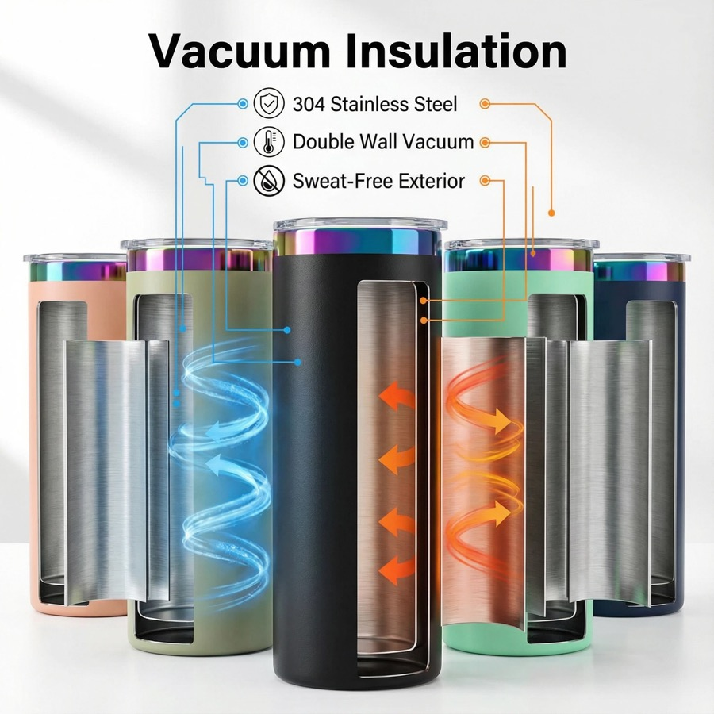

Blank Tumblers for In-House Printing
Suitable for print shops, personalization studios, marketplace sellers and distributors that apply artwork after delivery.
For print shops and custom brands
Short answer: choose a coated tumbler whose printable area, shape and press requirements match your workflow, then test one sample using your own press, paper and ink. HDS can compare selected blank tumbler models, accessories, packing and export shipping for bulk orders.

Suitable for print shops, personalization studios, marketplace sellers and distributors that apply artwork after delivery.
Availability, accessories, individual packaging and mixed-carton requirements determine the final quotation.
Time and temperature are starting points, not universal guarantees. Press pressure, heating uniformity, artwork density, paper, ink and local equipment can change the result. Approve a transferred sample for color, edge clarity, ghosting and coating consistency before scaling.
Format comparison
| Route | Best For | Key Approval Point |
|---|---|---|
| Straight-wall blank | Full-wrap graphics and repeat personalization | Printable dimensions and press fit |
| Handled blank | Gift and lifestyle ranges | Artwork clearance around handle geometry |
| Retail-ready set | Marketplace and store distribution | Box protection, barcode area and included accessories |
| Factory-decorated order | Buyers without local printing capacity | Decoration method, artwork proof and production sample |
Record the approved blank code, dimensions, coating appearance, accessory set and packing. For bulk receipt, sample cartons from different positions and check dents, coating defects, lid fit, quantity and carton condition before beginning a large print run.
Verify the coating, printable dimensions, press fit, accessories, carton protection and recommended transfer range, then test the actual blank in your workflow.
Yes. Use it to check transfer quality, coating consistency, lid function and packaging before confirming the bulk specification.
Selected stock-based projects can start from 200 pieces. Model, accessories, packaging and factory decoration affect the final MOQ.
Depending on the project, options can include individual boxes, labels, color boxes, gift packaging and export cartons.
Custom tumbler supplier · Custom stainless steel tumblers · Logo method guide · Tumbler packaging guide
Send your shape, quantity, accessory, packaging and destination requirements.